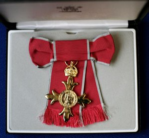

This timeline is filled with major events of Mr. Turing's past life. Events come from our Primary and Secondary sources. Images come from multiple mass media sources and the timeline is fully developed by yours truly, Jake Lille.
Alan Mathison Turing born in Maida Vale, London, to Ethel Sara Turing (nee Stoney) and Julius Mathison Turing.
Alan becomes great friends with Christopher Morcom, another talented boy who loves Math and Science. While they are applying for a university, Christopher suddenly dies, unexpected by Turing.
Due to Christopher's death, Alan Turing becomes an Atheist believing that God had not protected his friend from death.
Turing studies at King’s college. He is elected a fellow on the strength of a dissertation in which he proves the central limit theorem.
Alan goes to Princeton University in America to study mathematics and is awarded a PhD.

Alan is asked to join the Government Codes and Ciphers School and arrives at Bletchley Park the day after war is declared.
Alan develops the Bombe, a device for decrypting the messages sent by the Germans using their Enigma machine.
Turing is engaged to fellow mathematician Joan Clarke, until he admits being a homosexual. The wedding never happens

Alan and his colleagues manage to break the more complicated German Naval Enigma system. This is a tremendous help to the Allies in the Battle of the Atlantic.
At the end of the war, Alan Turing is awarded the OBE for his wartime services.
Alan joins the National Physical Laboratory in Teddington and he publishes a paper with the first detailed design of a stored-program computer.
Alan publishes ‘Computing Machinery and Intelligence' in which he develops the Turing Test, an attempt to define a standard for a machine to be called intelligent. The paper will become very famous.
Alan is arrested for being a homosexual and loses his security clearance. He is offered chemical treatment as an alternative to imprisonment.
Alan dies by cyanide poison. While no further investigation was involved, it was marked as suicide.